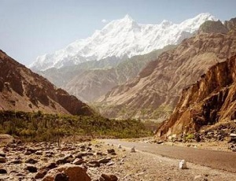
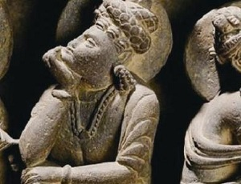
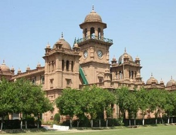
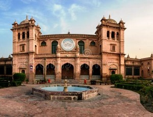
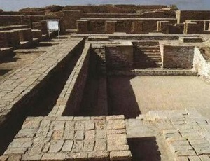
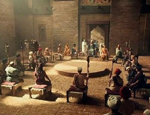

morly旅游网
巴基斯坦伊斯兰共和国（英语：Islamic Republic of Pakistan），简称“巴基斯坦”（Pakistan），意为“圣洁的土地”、“清真之国”。95%以上的居民信奉伊斯兰教，是一个多民族伊斯兰国家。国语为乌尔都语。 巴基斯坦位于南亚次大陆西北部，南濒阿拉伯海，东接印度，东北邻中华人民共和国，西北与阿富汗交界，西邻伊朗。海岸线长980公里。南部属热带气候，其余属亚热带气候。首都伊斯兰堡，前首都卡拉奇是最大城市。
饮食文化：
巴基斯坦人喜欢吃香辣的食品，他们用胡椒、姜黄等做的咖哩食品闻名世界。巴基斯坦菜，无论是肉、鱼、豆类，还是蔬菜，绝大多数是辣的，泡菜也是辣的。他们没有炒菜的习惯，无论是牛肉、羊肉、鱼或是各种豆类、蔬菜，均炖得烂熟。常见的菜肴有西红柿、土豆沙拉、炖豆、用西红柿辣椒汁做成的炖鸡。炖牛羊肉、青菜泥、豌豆肉末，肉末加淀粉做成的小肉饼、生菜等。食用油主要是牛油，也用葵花子油、橄榄油等植物油。他们都用平底锅和高压锅，不用炒菜锅。巴基斯坦人不管荤菜、素菜，一律放入平底锅或高压锅中炖得烂熟，而不是炒菜。主食是一种称为“查巴提”的小麦煎饼，平常有嚼槟榔的习惯。
巴基斯坦人的主食为面粉和大米，一种名叫“恰巴提”的粗面饼最受欢迎，还有油饼、油炸土豆馅“三角”。人们也普遍食用西式点心和面包。大米常常加上各种作料做成黄油抓饭和肉抓饭。另一种染有颜色的甜米饭是婚宴的必备食品。他们吃饭不用刀叉、筷子，而是在净手后用右手抓着吃（左手认为是不洁的）。他们的手抓技术十分熟练，而且不怕烫。无论在城市或乡村，盛饭盛菜都用浅口盘子，大概是适宜盛饼的缘故。绝对禁酒，特别是含酒精的，包括啤酒，还有无醇的酒（Achoholfree）但不禁烟。在当地，饮食卫生是个大问题，不要到小摊上随便吃什么，要到正规的饭店吃饭。


下面看看巴基斯坦的美景有哪些吧！
吉拉斯岩画
巴基斯坦的山区小镇吉拉斯素以古老岩画而闻名。从首都伊斯兰堡出发，沿着印度河驱车北行约420公里，就可以到达“吉拉斯一期”岩画遗址。在河岸两旁一块块黝黑而光滑的岩石上，当地先民通过简朴的岩画为我们遗留下了早期人类社会广阔的生活风貌。由于被刻画在巨大的岩石上，吉拉斯岩画至今仍然静静地躺在印度河岸边等待人们的观赏。它就象一座露天的博物馆，无时无刻不在向来往的人们讲述着印度河文明悠久的历史。
 白沙瓦
白沙瓦是一座具有悠久历史的文化古城。城市布局和建筑受西方文化的影响较少，保持着浓郁的普什图文化的特色。白沙瓦有许多名胜古迹，如巴拉希散尔堡、吉沙·卡瓦尼商场、开伯尔山口、塔拉、白沙瓦博物馆等。
 摩亨佐·达罗考古遗址
坐落在巴基斯坦南部的信德省拉尔卡纳县，是印度河流域文明（公元前2350——前1750年）中最能代表当时文化艺术的遗址，在当时语言中是“死人之丘”的意思。布局整齐的城市被宽阔笔直的街道分成大大小小的街区，全城建有十分完备的下水道系统。
拉赫尔古堡位于巴基斯坦东部旁遮普省，由一座带宫殿的城堡、一座清真寺组成其主体，是一座包括亭台、瀑布和池塘的精美花园。城堡内的镜宫由莫卧儿王朝第五代皇帝沙·贾汗建筑，墙壁皆用白色软玉砌成。
 内容整理至网络，如有侵权，请联系我们！1255394075@qq.com